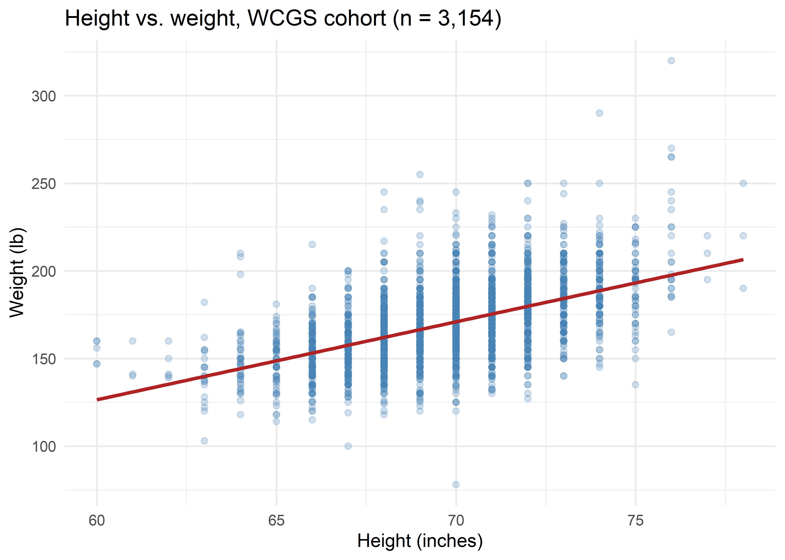
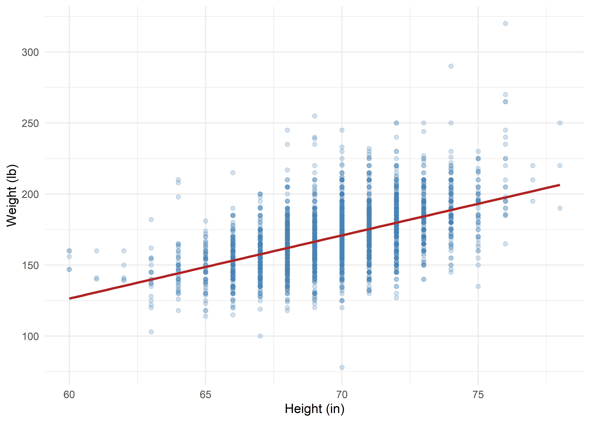
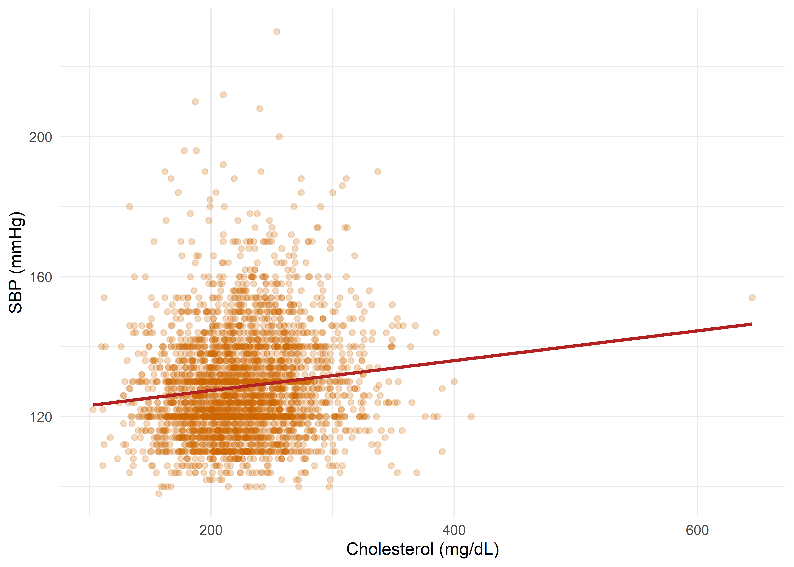
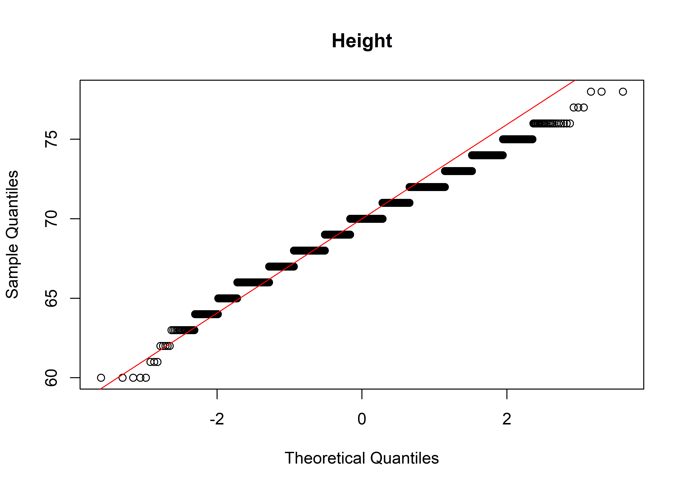
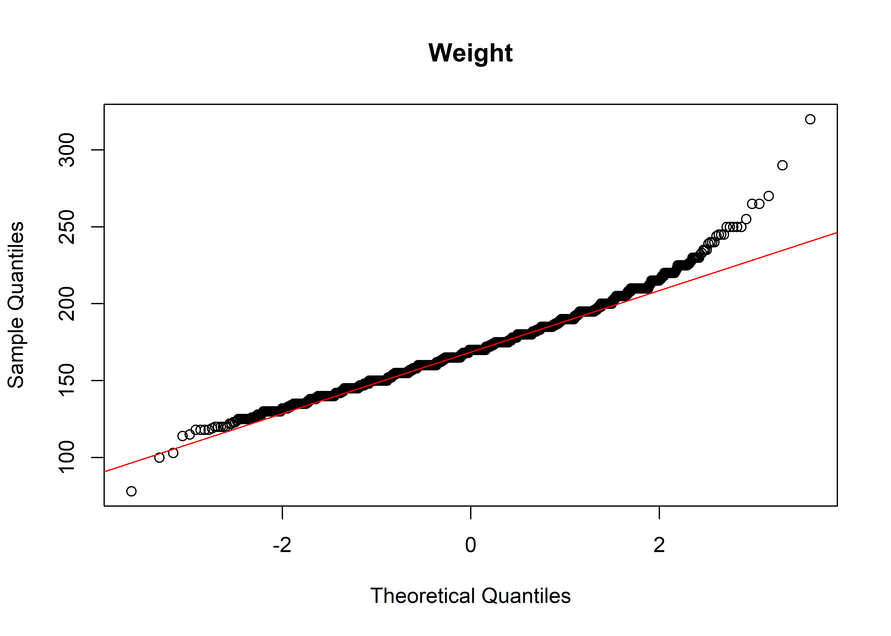
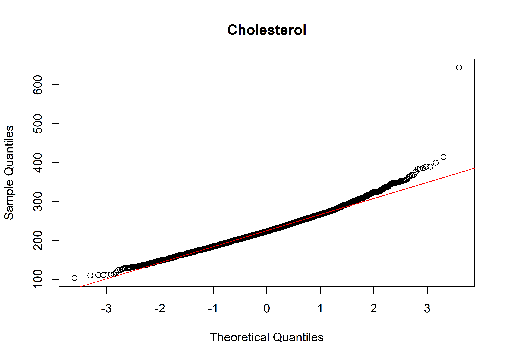
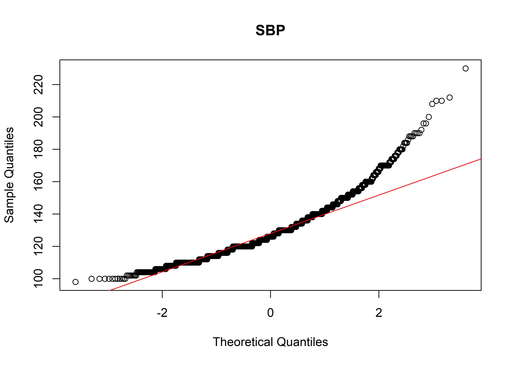

By the end of this chapter, you should be able to:
Explain what it means for two numeric (continuous) variables to be “associated,” and describe that association using a scatter diagram.
State the definition, assumptions, properties, and correct interpretation of the Pearson product-moment correlation coefficient (\(r\)).
Calculate \(r\)by hand from raw data, test \(H_0: \rho = 0\), and construct a confidence interval for \(\rho\).
State the definition, assumptions, properties, and correct interpretation of the Spearman rank correlation coefficient (\(r_s\) or \(\rho_s\)).
Calculate \(r_s\)by hand, including the correction needed when tied ranks are present.
Reproduce both coefficients in R, using the Western Collaborative Group Study (WCGS) data set as a worked example, and correctly choose between Pearson and Spearman for a given pair of variables.
Recognise common pitfalls in interpreting correlation coefficients.
Association Between Two Numeric Variables
In epidemiology and clinical research we frequently ask whether two quantitative (numeric) characteristics measured on the same individuals tend to move together — for example, does systolic blood pressure rise with age? Does body weight track with height? Does serum cholesterol relate to blood pressure?
Association (or correlation, used loosely) between two numeric variables describes the tendency of one variable to change systematically as the other changes. It has three components that should always be examined together:
Direction — do the variables move in the same direction (positive association) or opposite directions (negative association)?
Strength — how closely do the points cluster around a discernible trend?
Form — is the trend linear, curvilinear (monotonic but not straight), or is there no discernible pattern?
The scatter diagram
The scatter diagram (scatterplot) is the essential first step in any correlation analysis — a numeric summary should never be trusted without first looking at the data.
ggplot(wcgs, aes(x = height, y = weight)) +geom_point(alpha =0.25, colour ="steelblue") +geom_smooth(method ="lm", se =FALSE, colour ="firebrick") +labs(x ="Height (inches)", y ="Weight (lb)",title ="Height vs. weight, WCGS cohort (n = 3,154)") +theme_minimal(base_size =12)

Figure 18.1: Height and weight in the WCGS cohort (each point is one man).
Two correlation coefficients dominate practice, and this chapter covers both:
Pearson\(r\)
Spearman\(r_s\)
Measures
Strength of linear association
Strength of monotonic association
Uses
Raw values
Ranks of the values
Best suited to
Approximately normal, linearly related continuous data
Ordinal data, non-normal data, data with outliers, or monotonic-but-curved relationships
Pearson Product-Moment Correlation Coefficient
Definition
For a population, the Pearson correlation coefficient is
Both \(X\) and \(Y\) are continuous (interval/ratio) numeric variables.
The relationship between \(X\) and \(Y\) is (approximately) linear.
For inference (hypothesis tests / CIs), the pairs \((X,Y)\) come from a bivariate normal distribution — in practice this is usually checked by inspecting the marginal distributions of \(X\) and \(Y\) for gross non-normality and skew.
Observations are independent of one another.
No excessively influential outliers.
Variance of \(Y\) is reasonably constant across the range of \(X\) (homoscedasticity).
Properties
\(-1 \le r \le 1\); \(r=1\) is perfect positive linear association, \(r=-1\) perfect negative linear association, \(r=0\) no linear association.
\(r\) is unit-free (dimensionless) and symmetric: \(r_{xy} = r_{yx}\).
\(r\) measures only linear association — a strong curved relationship can produce a small \(r\).
\(r\) is sensitive to outliers and to restriction of range.
\(r^2\) (the coefficient of determination) is the proportion of variance in \(Y\) “explained” by the linear relationship with \(X\).
Correlation does not imply causation.
A rule-of-thumb interpretation scale
\(|r|\)
Strength of linear association
0.00 – 0.09
Negligible
0.10 – 0.39
Weak
0.40 – 0.69
Moderate
0.70 – 0.89
Strong
0.90 – 1.00
Very strong
These cut-points (adapted from conventions such as Cohen, 1988) are a rough guide only; the meaningfulness of a given \(r\) always depends on the substantive context.
Hypothesis test for \(\rho\)
To test \(H_0: \rho = 0\) versus \(H_1: \rho \ne 0\):
\[
t = r\sqrt{\frac{n-2}{1-r^2}} \qquad \sim \; t_{(n-2)} \text{ under } H_0
\tag{18.3}\]
Confidence interval for \(\rho\) (Fisher’s \(z\)-transformation)
Because the sampling distribution of \(r\) is skewed (except when \(\rho=0\)), Fisher’s \(z\)-transformation is used:
With \(t = 3.28\) on \(8\) df, \(p = 0.011\): we reject \(H_0\) at the \(5\%\) level and conclude there is a statistically significant positive linear association between height and weight in this small sample.
Step 4: Verify against R’s built-in function
cor.test(x, y, method ="pearson")
#>
#> Pearson's product-moment correlation
#>
#> data: x and y
#> t = 3.2816, df = 8, p-value = 0.01116
#> alternative hypothesis: true correlation is not equal to 0
#> 95 percent confidence interval:
#> 0.2444014 0.9391791
#> sample estimates:
#> cor
#> 0.7574675
The hand-calculated \(r\), \(t\), \(df\), and \(p\)-value match R’s cor.test() output exactly — confirming the manual arithmetic.
Spearman Rank Correlation Coefficient
When to use Spearman instead of Pearson
Spearman’s coefficient should be preferred over Pearson’s when:
The variables are ordinal rather than truly numeric (e.g., pain scores, tumour grade).
The data are numeric but markedly non-normal or skewed (Pearson’s inferential validity is weakened).
There are influential outliers that would distort \(r\).
The relationship is monotonic but not linear (consistently increasing or decreasing, but curved) — Spearman still detects this fully, whereas Pearson under-estimates it.
Definition
Spearman’s rank correlation is simply the Pearson correlation coefficient computed on the ranks of \(X\) and \(Y\) rather than on their raw values. If there are no tied ranks, this simplifies to the well-known shortcut formula:
Tied values are given the average of the ranks they would otherwise occupy. When ties are present, Equation 20.1 is only an approximation; the exact value is obtained by computing the ordinary Pearson formula (Equation 18.1) on the rank-transformed data. Software (including R) uses this ties-corrected version by default.
Assumptions and properties
Requires only that the data be at least ordinal, and that the relationship be monotonic.
\(-1 \le r_s \le 1\), same interpretation of sign and magnitude as Pearson’s \(r\), but describing a monotonic rather than strictly linear trend.
Far more robust to outliers than Pearson’s \(r\), because extreme values are pulled in by ranking.
Hypothesis test of \(H_0: \rho_s = 0\) can use the same \(t\)-approximation as Pearson’s (Equation 18.3), substituting \(r_s\) for \(r\), for moderate/large \(n\); exact permutation-based \(p\)-values are used for small \(n\) without ties.
Manual (Hand) Calculation of Spearman \(r_s\)
We again draw a reproducible random subsample of \(n=10\) men (this time keeping only those with a recorded cholesterol value) and examine total cholesterol (chol, mg/dL) against systolic blood pressure (sbp, mmHg) — two variables that are typically right-skewed, making Spearman a more defensible choice than Pearson.
set.seed(321)idx2 <-sample(which(!is.na(wcgs$chol)), 10)sub2 <-as.data.frame(wcgs[idx2, c("id", "chol", "sbp")])kable(sub2, caption ="Random subsample (n = 10, complete cholesterol) used for the manual Spearman calculation")
Random subsample (n = 10, complete cholesterol) used for the manual Spearman calculation
id
chol
sbp
3574
279
130
12432
288
122
3562
205
128
2242
212
152
12334
164
120
16026
230
138
3711
175
120
3069
241
120
3739
228
110
3281
205
116
Step 1: Rank each variable separately
Ranks are assigned from lowest (rank 1) to highest; tied values receive the average of the ranks they span. Notice that sbp = 120 occurs three times (ranks 3, 4, 5 → averaged to 4).
The tie-corrected (exact) value is \(r_s = 0.295\) — close to, but not identical to, the uncorrected shortcut (0.306). Rule of thumb: with any tied values, always use the Pearson-on-ranks method (or software) rather than the raw\(d^2\) shortcut.
Step 4: Verify against R’s built-in function
cor.test(cx, cy, method ="spearman")
#>
#> Spearman's rank correlation rho
#>
#> data: cx and cy
#> S = 116.26, p-value = 0.4073
#> alternative hypothesis: true rho is not equal to 0
#> sample estimates:
#> rho
#> 0.2953972
R’s cor.test() reports \(r_s = 0.295\), matching our tie-corrected hand calculation exactly (R issues a warning that an exact\(p\)-value cannot be computed because of ties, and instead reports an asymptotic \(t\)-approximation \(p\)-value). With \(n=10\) and \(r_s=0.295\), \(p = 0.41\) — no statistically significant monotonic association is detected in this small subsample.
Demonstration in R Using the Full WCGS Data Set
About the data
The Western Collaborative Group Study (WCGS) was a prospective cohort study of coronary heart disease (CHD) among middle-aged American men. The extract used here (wcgs.xls) contains 3154 subjects and the following key numeric variables:
dict <-data.frame(Variable =c("age","height","weight","bmi","sbp","dbp","chol","ncigs","chd69","behpat"),Description =c("Age (years)","Height (inches)","Weight (pounds)","Body mass index (kg/m$^2$)","Systolic blood pressure (mmHg)","Diastolic blood pressure (mmHg)","Total serum cholesterol (mg/dL)","Cigarettes smoked per day","Coronary heart disease event by end of follow-up (Yes/No)","Behaviour pattern (A1, A2, B3, B4)" ))kable(dict)
Table 22.1: Selected WCGS variables used in this chapter
Variable
Description
age
Age (years)
height
Height (inches)
weight
Weight (pounds)
bmi
Body mass index (kg/m\(^2\))
sbp
Systolic blood pressure (mmHg)
dbp
Diastolic blood pressure (mmHg)
chol
Total serum cholesterol (mg/dL)
ncigs
Cigarettes smoked per day
chd69
Coronary heart disease event by end of follow-up (Yes/No)
#> age height weight bmi sbp
#> Min. :39.00 Min. :60.00 Min. : 78 Min. :11.19 Min. : 98.0
#> 1st Qu.:42.00 1st Qu.:68.00 1st Qu.:155 1st Qu.:22.96 1st Qu.:120.0
#> Median :45.00 Median :70.00 Median :170 Median :24.39 Median :126.0
#> Mean :46.28 Mean :69.78 Mean :170 Mean :24.52 Mean :128.6
#> 3rd Qu.:50.00 3rd Qu.:72.00 3rd Qu.:182 3rd Qu.:25.84 3rd Qu.:136.0
#> Max. :59.00 Max. :78.00 Max. :320 Max. :38.95 Max. :230.0
#>
#> dbp chol ncigs
#> Min. : 58.00 Min. :103.0 Min. : 0.0
#> 1st Qu.: 76.00 1st Qu.:197.2 1st Qu.: 0.0
#> Median : 80.00 Median :223.0 Median : 0.0
#> Mean : 82.02 Mean :226.4 Mean :11.6
#> 3rd Qu.: 86.00 3rd Qu.:253.0 3rd Qu.:20.0
#> Max. :150.00 Max. :645.0 Max. :99.0
#> NA's :12
Step 2: Visualise the relationships first
ggplot(wcgs, aes(height, weight)) +geom_point(alpha =0.25, colour ="steelblue") +geom_smooth(method ="lm", se =FALSE, colour ="firebrick") +labs(x ="Height (in)", y ="Weight (lb)") +theme_minimal()ggplot(wcgs, aes(chol, sbp)) +geom_point(alpha =0.25, colour ="darkorange3") +geom_smooth(method ="lm", se =FALSE, colour ="firebrick") +labs(x ="Cholesterol (mg/dL)", y ="SBP (mmHg)") +theme_minimal()

(a) Height vs. weight

(b) Cholesterol vs. SBP
Figure 22.1: Two candidate relationships: (left) height vs. weight — roughly linear; (right) cholesterol vs. systolic BP — noisier, right-skewed variables.
Step 3: Check the normality assumption (needed for Pearson inference)
qqnorm(wcgs$height, main ="Height"); qqline(wcgs$height, col ="red")qqnorm(wcgs$weight, main ="Weight"); qqline(wcgs$weight, col ="red")qqnorm(wcgs$chol, main ="Cholesterol"); qqline(wcgs$chol, col ="red")qqnorm(wcgs$sbp, main ="SBP"); qqline(wcgs$sbp, col ="red")

(a) Height

(b) Weight

(c) Cholesterol

(d) SBP
Figure 22.2: Normal Q-Q plots: height and weight are close to normal; cholesterol and SBP are right-skewed.
shapiro.test(wcgs$height)
#>
#> Shapiro-Wilk normality test
#>
#> data: wcgs$height
#> W = 0.98357, p-value < 2.2e-16
shapiro.test(wcgs$chol)
#>
#> Shapiro-Wilk normality test
#>
#> data: wcgs$chol
#> W = 0.97856, p-value < 2.2e-16
With \(n = 3{,}154\), the Shapiro-Wilk test is extremely sensitive to trivial departures from normality (essentially all large samples reject \(H_0\)); the Q-Q plots are the more useful diagnostic here. Height is close to normal; cholesterol and SBP show the right skew typical of biological “positive-only” measurements, which is a caution for Pearson inference — and part of why we illustrate Spearman with this pair.
#>
#> Pearson's product-moment correlation
#>
#> data: wcgs$height and wcgs$weight
#> t = 35.36, df = 3152, p-value < 2.2e-16
#> alternative hypothesis: true correlation is not equal to 0
#> 95 percent confidence interval:
#> 0.5074729 0.5574681
#> sample estimates:
#> cor
#> 0.5329355
Interpretation:\(r = 0.533\) (\(95\%\) CI: \(0.507\) to \(0.557\)), \(t(3152) = 35.4\), \(p < 0.001\). There is a moderate, highly statistically significant, positive linear association between height and weight: taller men tend to weigh more. \(r^2 = 0.284\), i.e., height linearly “explains” about \(28\%\) of the variability in weight.
cor.test(wcgs$chol, wcgs$sbp, method ="pearson")
#>
#> Pearson's product-moment correlation
#>
#> data: wcgs$chol and wcgs$sbp
#> t = 6.9486, df = 3140, p-value = 4.466e-12
#> alternative hypothesis: true correlation is not equal to 0
#> 95 percent confidence interval:
#> 0.08847366 0.15735253
#> sample estimates:
#> cor
#> 0.1230613
Pearson’s \(r = 0.123\) for cholesterol vs. SBP — a weak association — but recall both variables are right-skewed, so this Pearson estimate may be distorted by a handful of high values.
#>
#> Spearman's rank correlation rho
#>
#> data: wcgs$chol and wcgs$sbp
#> S = 4457547658, p-value = 8.779e-15
#> alternative hypothesis: true rho is not equal to 0
#> sample estimates:
#> rho
#> 0.1377588
Interpretation:\(r_s = 0.138\), \(p < 0.001\). Because \(n\) is large, even this weak monotonic association is statistically significant — a reminder that with large samples, statistical significance and practical/clinical importance are not the same thing. Note exact = FALSE is required here because chol contains tied values and is large, so R falls back on the asymptotic \(t\)-approximation for the \(p\)-value.
#>
#> Spearman's rank correlation rho
#>
#> data: wcgs$height and wcgs$weight
#> S = 2409320566, p-value < 2.2e-16
#> alternative hypothesis: true rho is not equal to 0
#> sample estimates:
#> rho
#> 0.5392548
For height and weight, Pearson (\(r=0.533\)) and Spearman (\(r_s=0.529\)) agree closely — expected, since this relationship is close to linear and both variables are reasonably symmetric.
Step 6: A correlation matrix and correlation plot
It is often useful to examine several numeric variables at once.
vars <-c("age","height","weight","bmi","sbp","dbp","chol","ncigs")M <-cor(wcgs[, vars], use ="pairwise.complete.obs", method ="pearson")round(M, 2)
Correlation is not causation. A significant \(r\) or \(r_s\) establishes association, not that one variable causes changes in the other; confounding, reverse causation, and chance are all still possible explanations.
Non-linearity. Pearson’s \(r\) can be close to zero even when \(X\) and \(Y\) are strongly related, if the relationship is curved (e.g., U-shaped) — always plot the data first.
Outliers and leverage points. A single extreme observation can inflate or deflate Pearson’s \(r\) substantially; Spearman is more robust in this situation.
Restriction of range. Correlation estimated within a narrow range of \(X\) (e.g., only healthy adults) will understate the true association in the full population.
Ecological correlation. Correlating group-level averages (e.g., country-level means) can produce misleadingly strong correlations that do not hold at the individual level (ecological fallacy).
Statistical vs. clinical significance. With very large \(n\) (as in WCGS, \(n>3{,}000\)), even trivially small correlations become “statistically significant.” Always report and interpret the magnitude of \(r\)/\(r_s\), not just the \(p\)-value.
Multiple testing. Scanning many pairwise correlations (e.g., a full correlation matrix) inflates the chance of false positives; interpret exploratory matrices cautiously and confirm key findings with pre-specified hypotheses.
Summary
The scatter diagram is the starting point for any correlation analysis.
Pearson’s\(r\) quantifies the strength and direction of a linear relationship between two numeric variables; it assumes approximate bivariate normality and is sensitive to outliers.
Spearman’s\(r_s\) quantifies the strength and direction of a monotonic relationship using ranks; it requires only ordinal data, handles skew and outliers gracefully, and reduces to a simple \(d^2\) shortcut formula when there are no tied ranks (with a small correction needed when ties are present).
Both coefficients range from \(-1\) to \(+1\), are tested against \(H_0: \rho = 0\) using a \(t\)-based statistic, and should always be reported together with sample size, a confidence interval where possible, and — most importantly — a plot of the raw data.
In the WCGS data, height and weight show a moderate, near-linear positive association (\(r \approx r_s \approx 0.53\)), while cholesterol and systolic blood pressure show only a weak monotonic association (\(r=0.12\), \(r_s=0.14\)) despite reaching statistical significance because of the large sample size.
References
Rosner B. Fundamentals of Biostatistics. 8th ed. Cengage Learning.
Daniel WW, Cross CL. Biostatistics: A Foundation for Analysis in the Health Sciences. 11th ed. Wiley.
Bland M. An Introduction to Medical Statistics. 4th ed. Oxford University Press.
Woodward M. Epidemiology: Study Design and Data Analysis. 3rd ed. Chapman & Hall/CRC.
Cohen J. Statistical Power Analysis for the Behavioral Sciences. 2nd ed. Lawrence Erlbaum Associates, 1988.
Rosenman RH, et al. “A predictive study of coronary heart disease: the Western Collaborative Group Study.” JAMA. 1964;189:15–22. (Original WCGS study.)